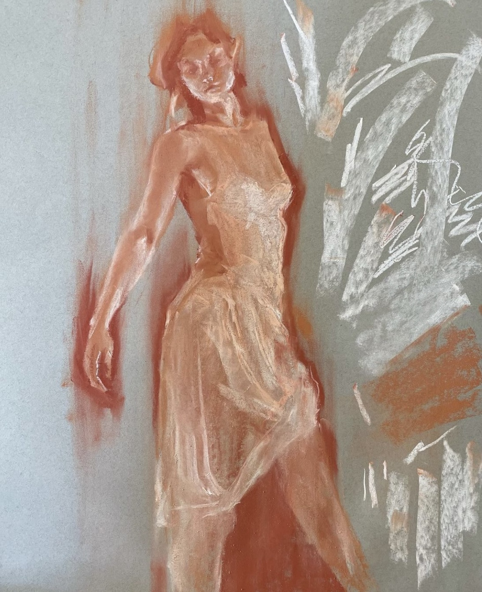
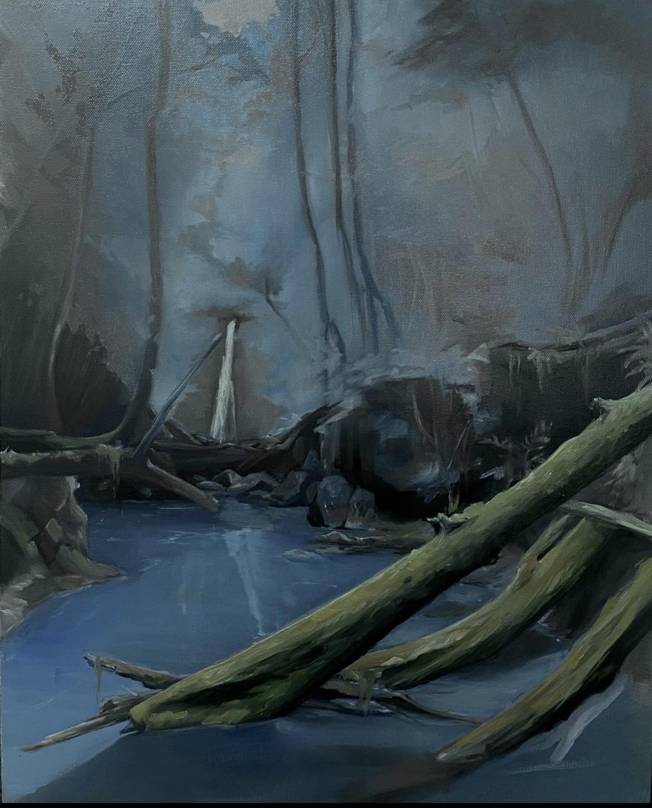

Information |
Savannah Skrinak |
|
01. Introspection
2022 |
Statement
This piece was inspired by my personal journey with introspection. I aim to visualize the feeling of confronting new and unknown feelings. I want to explore imagery of a void and how the unknown can give a daunting feeling. This painting reflects my journey in learning to approach uncertain emotions with curiosity and acceptance rather than fear. |
|  |
02. Landscape practice
2022 |
Statement
This landscape painting was a practice in using oil. I am familiar with acrylic painting but oil was a new challenge for me. I was aiming to create a landscape with a moody atmosphere. |
|
03. Lithography Prints
2021 |
Statement
These prints are inspired by the art nouveau style and incorporate figure with abstract visuals. Through these lithography prints I experimented with how to combine figures and abstract shapes to create a feeling of movment and to move the viewers eye around the image. |
|
04. Blushing Lake
2021 |
Statement
This painting was an experimentation in creating an atmosphere through color and composition. I focused on an errie atmosphere and tried to keep the scene monochromatic. |
|
05.Figure Drawings |
Statement
These figure drawings were done in my figure drawing classes throughout 2020-2022. I focused on improving elements such as lineweight, proportion, shading, gesture, and composition. |

|
About Me
I am currently a student at Loyola Marymount University. I am studying studio arts and graduate December 2022. I love experiementing with defferent mediums but I mainly focus on drawing and painting. I focus on figurative art in both my drawing and paintings. Resume: Click |